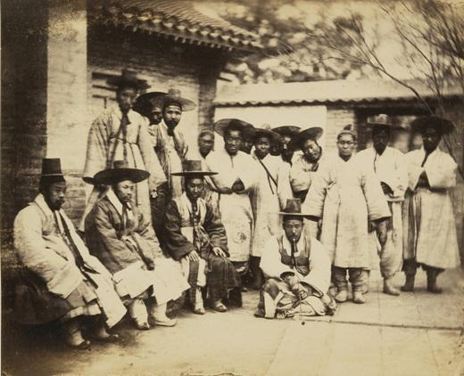
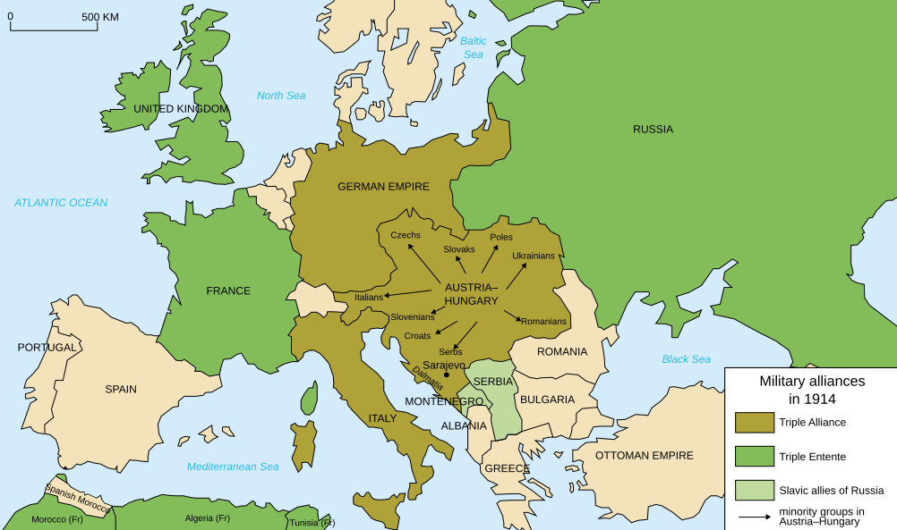
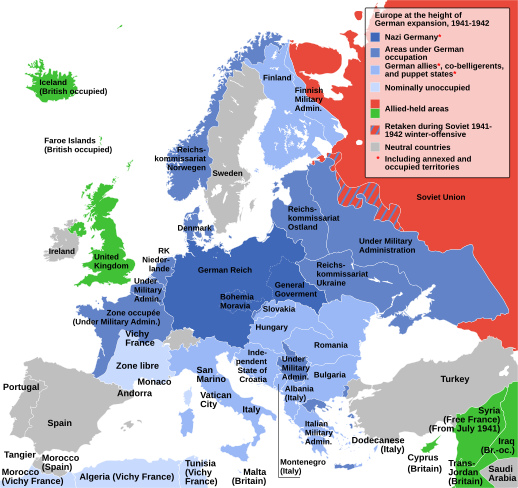
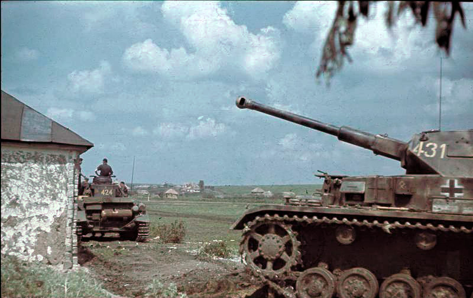
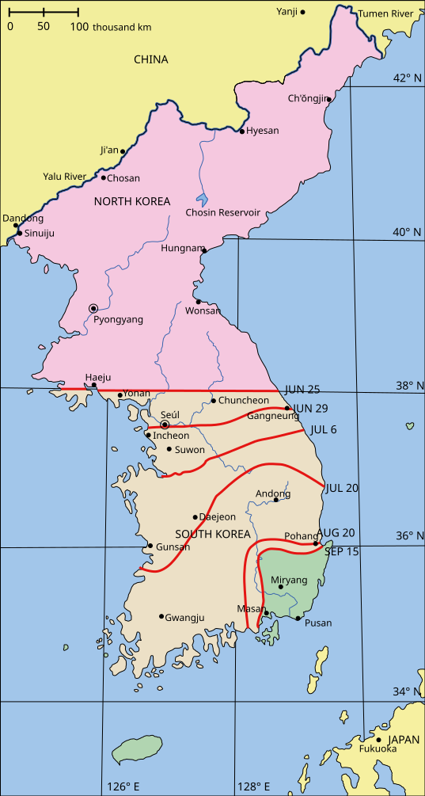
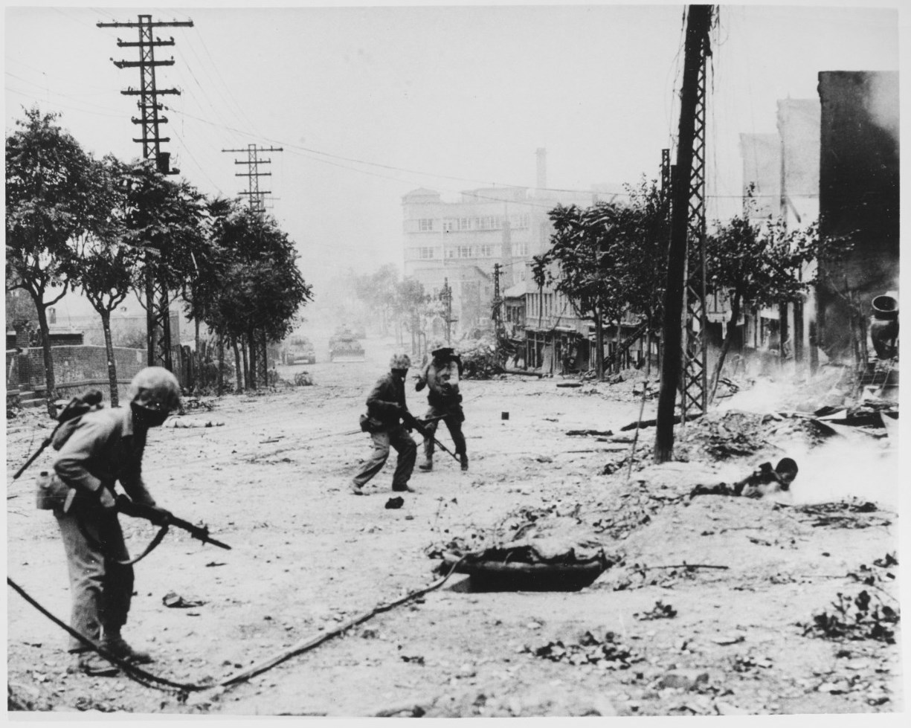
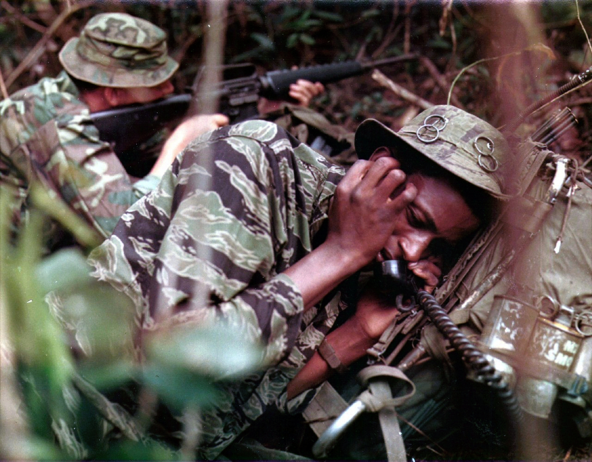

World History Archive
역사는 한곳에서만일어나지 않았다.
같은 시간, 서로 다른 지역.
고대부터 현대까지 주요 사건과 그 사이의 영향을 따라가며 역사의 전체 흐름을 살펴보세요.
탐색할 역사
대표 이미지를 선택하면 상세 타임라인으로 이동합니다.


1392
열람 가능
1392 — 1910
조선왕조
태조부터 순종까지 27명의 왕과 조선의 흐름을 바꾼 큰 사건을 왕대별로 살펴봅니다.
타임라인 보기
1914
준비 중
1914 — 1918
제1차 세계대전
참호전과 제국의 붕괴, 새로운 세계 질서의 시작.
곧 공개됩니다

1939
열람 가능
1939 — 1945
제2차 세계대전
유럽, 지중해·북아프리카, 동부전선, 아시아·태평양에서 동시에 전개된 전쟁의 흐름을 살펴봅니다.
타임라인 보기

1950
열람 가능
1950 — 1953
6·25 전쟁
한반도를 오르내린 전선과 국제전으로 확장된 전쟁.
타임라인 보기

1955
준비 중
1955 — 1975
베트남전쟁
분단된 베트남과 냉전의 대리전, 정글과 도시를 오간 장기전.
곧 공개됩니다